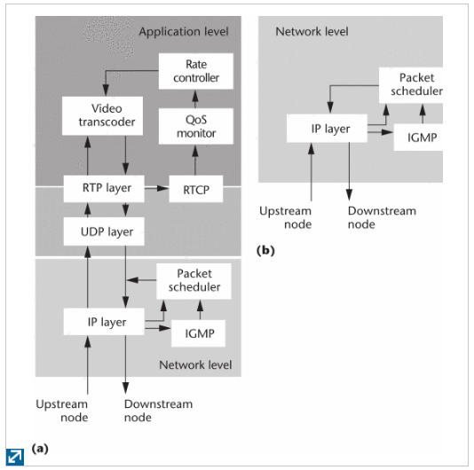

2017/03/30 - (Paper) Adaptive Video Multicast over the Internet - Part 2¶
Survey
Authors : Jiangchuan Liu and Bo Li , Hong Kong University of Science and Technology
Published in: IEEE MultiMedia ( Volume: 10, Issue: 1, Jan-Mar 2003 )
Full text : IEEE link here.
Existing adaptation approaches for video multicast (cont.)¶
Agent-based adaptation¶
Deploy several agents in a large-scale network, and the agents partition the network into several confined regions, and each agent can thus handle the requirements more easily from its local region.
{kind=link}
In figure (a) , an active node (such as a video gateway or agent) offers a richer set of services for video transmission at the application level than figure (b).
Support for video coding techniques¶
Discrete cosine transform (DCT 1) : A finite sequence of data points in terms of a sum of cosine functions oscillating at different frequencies. => Related to lossy compression of audio (e.g. MP3) and images (e.g. JPEG)
Variable bit rate (VBR) and Constant bit rate(CBR) 2 : Both terms are used to describe QoS.
Transcoding¶
A transcoder converts an existing video stream into a new stream with a different format or rate.
Conclusions¶
Simulcast remains a promising approach to address user heterogeneity.=> It’s supported in many commercial streaming systems.
Layered multicast has seldom been used.
The process of decompression and lossy recompression inherently accumulates quantization noise each time.
Since Inhternet protocol multicast hasn’t been widely deployed, the CDN 4 provides a very attractive alternative that’s readily available for the current Internet.